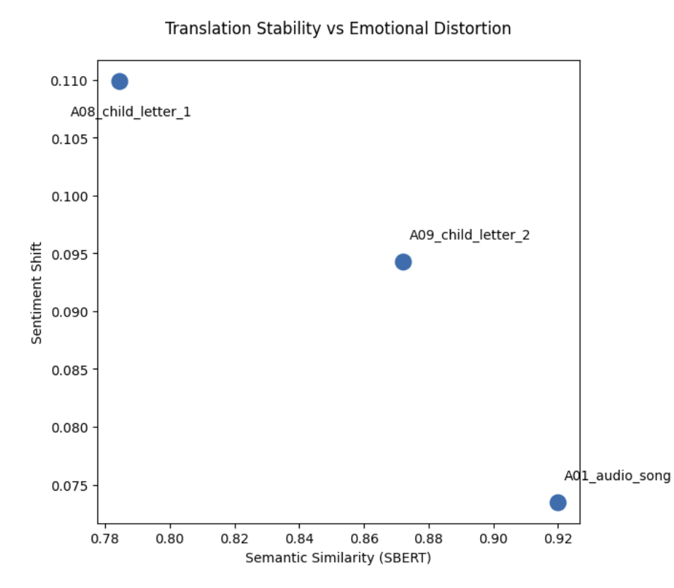

Translation Analysis
This analysis examines how automated translation affects both the meaning and emotional tone of Burmese artifacts in the archive. Rather than treating translation simply as a tool for accessibility, the goal is to evaluate whether AI translation preserves the meaning of the original text or subtly alters it.
To test this, each Burmese artifact was passed through a three-step translation cycle. First, the Burmese text was translated into English. That English version was then translated back into Burmese, and finally translated into English again. Comparing the first and final English versions makes it possible to measure how meaning and tone shift as the text moves through multiple automated translations.
Two quantitative measures were used. Semantic similarity, calculated using SBERT embeddings, measures how closely the two English versions match in meaning. Sentiment shift, calculated using the VADER sentiment model, measures whether the emotional tone changes during the translation process.
Three artifacts were analyzed: two letters written by children and a well-known Burmese protest song.
Method and Quantitative Results
The translations generally preserved the overall meaning of the artifacts, though some drift occurred. The protest song produced the highest semantic similarity score at 0.92, indicating that its meaning remained relatively stable across translations. The second child letter scored 0.87, while the first child letter scored 0.78, showing somewhat greater semantic drift.
Changes in emotional tone were smaller. The protest song produced the lowest sentiment shift at 0.0735, while the two child letters produced slightly larger shifts of 0.0943 and 0.1099.

These results appear clearly in the chart. The protest song sits furthest to the right, indicating the strongest preservation of meaning, and also lower on the chart, indicating relatively little emotional distortion. The two child letters appear further left, showing more semantic drift. The first child letter also sits slightly higher, reflecting the largest emotional shift among the three artifacts.
Observations
Looking more closely at the translations helps explain this pattern. The protest song remains largely recognizable across translation cycles. Key ideas about sacrifice, resistance, and remembrance remain intact even when individual phrases change slightly. The repetitive and structured nature of song lyrics likely contributes to this stability.
The child letters, by contrast, show more noticeable wording changes. Some phrases become more generalized in English, and certain expressions that likely carry emotional or cultural nuance in Burmese are simplified. The meaning is still understandable, but the tone and specificity shift slightly.
This pattern suggests that more structured language tends to translate more consistently, while personal narrative writing is more vulnerable to distortion.
Interpretation
These results suggest that AI translation can capture the general meaning of Burmese texts, particularly when language is repetitive or formulaic. Subtle shifts in phrasing still alter tone and emotional nuance, especially in personal testimony.
AI translation works best as an access tool rather than a final interpretation. It helps readers understand general content, but it cannot fully preserve the cultural and emotional nuance of the original Burmese text.
As with the other analyses in this archive, the most useful role of AI is to point readers toward the artifacts themselves. The translation provides a pathway into the text, but understanding the full meaning of these materials still depends on careful human interpretation.
Conclusion
Translation analysis helps visualize how meaning and tone can shift as testimony passes through repeated automated language conversion. It shows that core meaning is often preserved, but emotional detail and cultural nuance can drift.
The most responsible use of translation tools in this archive is therefore guided and interpretive. The output can improve access, but the testimony itself must remain the primary reference for understanding what these artifacts say and what they mean.